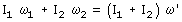
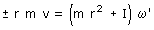

Conservación del momento angular
Cuando un sistema no está sometido a ningún momento de fuer-zas exteriores el momento angular se conserva.
Aplicaciones:
Cambio en la rotación de un cuerpo aislado
Un cuerpo aislado en rotación tiene un momento angular I·ω. Si cambia la distribución de su masa respecto al eje cambiará su momento de inercia y tendrá que cambiar la velocidad angular para que se conserve el momento angular, cumpliéndose:

Acoplamiento de discos (Embrague)
Dos discos que giran independientemente se pueden acoplar pa-ra que giren alrededor de un eje común con igual velocidad an-gular. Conservación del momento angular:

Recuerda que los m.d.i respecto al mismo eje se suman
Conversión de traslación en rotación
Si un cuerpo que se traslada se incrusta en otro cuerpo que tie-ne un eje, el conjunto girará. En este caso la conservación del momento angular se expresa así:

r |
Distancia del punto de impacto al eje |
± |
Se toma signo + cuando se gira de r a v en sentido anti-horario, en caso contrario se toma signo - |
Importante
Cuando la velocidad angular sea dato habrá que ponerle signo y cuando sea incógnita se obtendrá el valor con signo